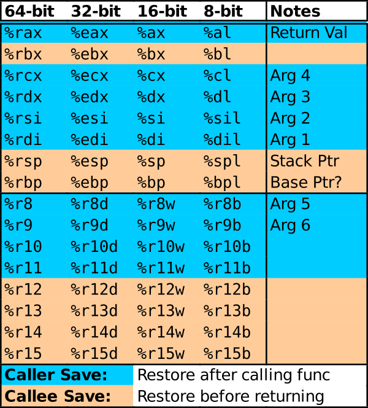

CMSC216 Lab06: GDB with Binaries and Caller / Callee Registers
- Due: 11:59pm Sun 22-Mar-2026 on Gradescope
- Approximately 1.00% of total grade
CODE DISTRIBUTION: lab06-code.zip
CHANGELOG:
- Mon Mar 9 09:01:37 AM EDT 2026
- A bug in the
Makefilereported in Post 142 has bee fixed. This affected themake test-codetarget which would misbehave - Sun Mar 8 01:41:42 PM EDT 2026
- The missing files for Problem 2 have been added into the codepack.
Table of Contents
1 Rationale
Debuggers work at the binary level so it should not be surprising that they can handle programs that are devoid of source code. While less intuitive than working with the original programs, analyzing the disassembled instructions in a binary still allows its behavior to be understood and can give deeper insight into how assembly works. This lab presents a simple practice problem on working with part of a program that does not have source code.
Processor registers are shared among all programs and functions within individual programs. Registers on most modern processor architectures are divided between Caller and Callee save registers according to the Operating System Application Binary Interfaces (ABI). This set of rules dictates which registers may change during a function call and which will remain stable across the call. These rules are adhered to by compilers but must be followed "by hand" when writing assembly code often leading to mistakes when the programmer is unacquainted with the conventions. This lab demonstrates some of those common errors practices how to safely use and restore Callee-save registers.
Associated Reading / Preparation
- PROBLEM 1: Quick Guide to GDB: Run Assembly Without Source Code Available; tricks to deal with binary only files where no source code is available.
- PROBLEM 2: Bryant and O'Hallaron Ch 3.7 on assembly procedure call conventions in x86-64. Specifically, Ch 3.7.5 discusses caller/callee save conventions and the code associated with them.
Grading Policy
Credit for this lab is earned by completing the code/answers in the
Lab codepack and submitting a Zip of the work to Gradescope preferably
via running make submit. Students are responsible to check that the
results produced locally are reflected on Gradescope after submitting
their completed Zip.
Lab Exercises are Free Collaboration and students are encouraged to cooperate on labs. Students may submit work as groups of up to 5 to Gradescope: one person submits then adds the names of their group members to the submission.
No late submissions are accepted for Lab work but the lowest two lab scores for the semester will be dropped including zeros due to missing submissions. See the full policies in the course syllabus.
2 Codepack
The codepack for the HW contains the following files:
| File | Description | |
|---|---|---|
QUESTIONS.txt |
EDIT | Questions to answer: fill in the multiple choice selections in this file. |
quote_main.c |
Provided | Problem 1: Main file for debugging |
quote_data.o |
Provided | Problem 1: Binary file for debugging |
add2strs_asm_A.s |
Study | Problem 2: A version, broken code to study to understand errors |
add2strs_asm_B.s |
Study | Problem 2: B version, broken code to study to understand errors |
add2strs_asm_C.s |
EDIT | Problem 2: C version, complete this version with correct code |
add2strs_reference.c |
Provided | Problem 2: C reference implementation of assembly code to write |
add2strs_main.c |
Provided | Problem 2: Main and utility function calling assembly function |
add2strs_clobber_asm.s |
Provided | Problem 2: Assembly code used to ensure reliable behavior across compiler versions |
Makefile |
Build | Enables make test and make zip |
QUESTIONS.txt.bk |
Backup | Backup copy of the original file to help revert if needed |
QUESTIONS.md5 |
Testing | Checksum for answers in questions file |
test_quiz_filter |
Testing | Filter to extract answers from Questions file, used in testing |
test_lab06.org |
Testing | Tests for the lab |
test_lab06_code.org |
Testing | Code tests for individual problems via make test-prob1 |
testy |
Testing | Test running scripts |
gradescope-submit |
Misc | Allows submission to Gradescope from the command line |
3 Register Reference
This lab deals with the General Purpose Registers and the division between Caller / Calee save registers. The diagram below color codes registers according to which category they are in.

4 QUESTIONS.txt File Contents
Below are the contents of the QUESTIONS.txt file for the exercise.
Follow the instructions in it to complete the QUIZ and CODE questions
for the exercise.
_________________
LAB06 QUESTIONS
_________________
Exercise Instructions
=====================
Follow the instructions below to experiment with topics related to
this exercise.
- For sections marked QUIZ, fill in an (X) for the appropriate
response in this file. Use the command `make test-quiz' to see if
all of your answers are correct.
- For sections marked CODE, complete the code indicated. Use the
command `make test-code' to check if your code is complete.
- DO NOT CHANGE any parts of this file except the QUIZ sections as it
may interfere with the tests otherwise.
- If your `QUESTIONS.txt' file seems corrupted, restore it by copying
over the `QUESTIONS.txt.bk' backup file.
- When you complete the exercises, check your answers with `make test'
and if all is well. Create a zip file and submit it to Gradescope
with `make submit'. Ensure that the Autograder there reflects your
local results.
- IF YOU WORK IN A GROUP only one member needs to submit and then add
the names of their group on Gradescope.
PROBLEM 1: Binary Debugging of QUOTES
=====================================
The two files `quote_main.c' and `quote_data.o' can be compiled
together to form an executable as in the following.
,----
| > gcc quote_main.c quote_data.o
| > ./a.out
| Complete this sentence by C++ creator Bjarne Stroustrup:
| C makes it easy to shoot yourself in the foot; ...
|
| enter a number from 0 to 15: 2
|
| 2: This is why most programmers are such poor dancers.
|
| Have a nice tall glass of ... NOPE.
`----
As in a previous exercise, the intention is to use the debugger to
detect the correct response. In this case however, the correct
completion is present in `quote_main.c'. However, one must enter a
number which selects from several responses in an attempt to match the
correct completion. This causes something to happen in `quote_data.o'
but no source code is available for it.
It is possible to "brute force" the solution by trying all
solutions. That would miss the purpose of the exercise, to gain
familiarity with how GDB can handle binaries and allow one to resolve
situations that are not so amenable to brute force.
QUIZ: Basic Binary Analysis
~~~~~~~~~~~~~~~~~~~~~~~~~~~
Use some utility programs to gather information about the contents of
the binary file `quote_data.o'. Review the previous HW if you have
forgotten what programs do OR brute force this QUIZ question by trying
the various suggested programs to see what they do.
For each of the below commands, select the response that best
describes its effect.
`>> nm quote_data.o'
--------------------
- ( ) Prints back the name of the file
- ( ) Displays the assembly code in the TEXT section of the file
- ( ) Displays the original C code that produced the binary file
- ( ) Shows the "symbols" (functions and global variables) in the file
- ( ) Shows the ELF (executable/linkable format) sections are in file
- ( ) Produces all ASCII strings embedded in the file
`>> objdump -d quote_data.o'
----------------------------
- ( ) Prints back the name of the file
- ( ) Displays the assembly code in the TEXT section of the file
- ( ) Displays the original C code that produced the binary file
- ( ) Shows the "symbols" (functions and global variables) in the file
- ( ) Shows the ELF (executable/linkable format) sections are in file
- ( ) Produces all ASCII strings embedded in the file
`>> readelf -s quote_data.o'
----------------------------
- ( ) Prints back the name of the file
- ( ) Displays the assembly code in the TEXT section of the file
- ( ) Displays the original C code that produced the binary file
- ( ) Shows the "symbols" (functions and global variables) in the file
- ( ) Shows the ELF (executable/linkable format) sections are in file
- ( ) Produces all ASCII strings embedded in the file
`>> strings quote_data.o'
-------------------------
- ( ) Prints back the name of the file
- ( ) Displays the assembly code in the TEXT section of the file
- ( ) Displays the original C code that produced the binary file
- ( ) Shows the "symbols" (functions and global variables) in the file
- ( ) Shows the ELF (executable/linkable format) sections are in file
- ( ) Produces all ASCII strings embedded in the file
QUIZ: GDB with Compiled Functions
~~~~~~~~~~~~~~~~~~~~~~~~~~~~~~~~~
The entry point into the assembly code in `quote_data.o' is the
function `get_it()' which is called from the `main()' function defined
in `quote_main.c'.
Which of the following command sequences will start `gdb', set a break
point on this function, and run to that position?
,----
| ####### A ######
| >> gdb -tui quote_main
| (gdb) break get_it
| (gdb) run
|
| ####### B ######
| >> gdb -tui quote_data.o
| (gdb) break get_it
| (gdb) run main
|
| ####### C ######
| >> gdb -tui quote_main.c
| (gdb) break quote_data.o
| (gdb) run get_it
|
| ####### D ######
| >> gdb -tui quote_data.o
| (gdb) break quote_main
| (gdb) run get_it
`----
- ( ) A
- ( ) B
- ( ) C
- ( ) D
On arriving in the `get_it()' function, what does GDB show initially
about the function?
- ( ) It shows the first lines of the C code for that function
- ( ) It shows the first lines of the Assembly code for that function
- ( ) It shows the first lines of the Binary Opcodes for that function
- ( ) It shows "No Source Available" because a certain cruel
instructor omitted the source code for this binary file.
Type thefollowing commands below and indicate how this changes the
display that GDB shows.
,----
| (gdb) layout asm
| (gdb) layout regs
| (gdb) run (then answer "y" to re-run)
`----
After these commands GDB shows
- ( ) The return value of the `get_it()' function and the register it
is stored in
- ( ) The values of all registers and the C code of `get_it()'
- ( ) The values of all registers and the assembly instructions of
`get_it()' (which are disassembled by GDB)
- ( ) The values of all registers and the binary and hex encoding of
the machine instructions for `get_it()'
CODE: Step through the code to find the right Choice
~~~~~~~~~~~~~~~~~~~~~~~~~~~~~~~~~~~~~~~~~~~~~~~~~~~~
Use the debugger to step through the functions in `quote_data.o' and
determine the right number to pass in to generate the correct
response. Place this number in the file `input.txt' which is opened
and read by `quote_main.c'.
*NOTE: It is VERY EASY to solve this via brute force* by trying many
possibilities BUT the point is the gain experience navigating assembly
code with GDB and understanding compiled code despite lacking its
original source.
Here are some tips to help you navigate and understand what you see.
- Debugger commands for single instructions are preferable when
working in assembly
stepi / si step a single instruction forward, step INTO function calls
nexti / ni step a single instruction forward, step OVER function calls
Use plain `step' may step several instructions ahead as GDB guesses
on how many correspond to a missing line of C.
- Within the code for `get_it' is a call to `list_get'. This along
with the fact that earlier listings of global variables had a
`nodes' name indicates that some sort of linked list is present with
the choices.
- The parameters to the function follow the standard convention: 1st
param in register `%rdi', second in `%rsi', and so forth. You
should be able to identify a loop in a critical function in which
the choices are present. Use `print' and `x' commands in gdb to
examine data pointed to be registers to help identify where the
correct response is located.
- Often the `testX' instruction is used to determine truthy/falsey
qualities about a register. This takes several forms that are
discussed in lecture that you are likely to see:
- `testl %edx, %edx' may be used to check if `%edx' is 0 or negative
- `testq %rax, %rax' may be used to check if `%rax' is a `NULL'
pointer
- You can examine memory addresses pointed to registers with gdb
commands like the following. More details are in the GDB Quick
Guide.
,----
| (gdb) x/d $rax # print memory pointed to by rax as a decimal integer
| (gdb) x/x $rax # print memory pointed to by rax as a hex number
| (gdb) x/s $rax # print memory pointed to by rax as a string
`----
- You can set breakpoints at individual instructions using the
following syntax involving the * symbol from the GDB Quick Guide.
COMMAND Effect
---------------------------------------------------------------------------
`break *0x1248f2' Break at specific instruction address
`break *func+24' Break at instruction with decimal offset from a label
`break *func+0x18' Break at instruction with hex offset from a label
A good sign that you are absorbing what's going on is if you can come
back to `quote_main' a day later, and use GDB commands to quickly find
the correct index again.
PROBLEM 2 Overview of addstrs
=============================
Survey the provided code and examine the following source files.
------------------------------------------------------------------------------------------------------------------
FILE Description
------------------------------------------------------------------------------------------------------------------
add2strs_main.c A main() and convert() function in C; these are used assembly function add2strs()
add2strs_asm_A.s A broken version of the add2strs() function in assembly for study
add2strs_asm_B.s A broken version of the add2strs() function in assembly for study
add2strs_asm_C.s An empty version of add2strs() that needs to be Edited
add2strs_reference.c A reference C implementation of add2strs(): it shows the intended behavior of the function
------------------------------------------------------------------------------------------------------------------
The general setup is the following calling sequence:
- main() written in C calls...
- add2strs() written in Assembly calls...
- convert() written in C
The middle function add2strs() has several versions which are
broken. The goal of the lab is to explain why the A and B versions are
incorrect and create a working C version of the function in
`add2strs_asm_C.s'.
The primary reason that the A and B versions broken is a failure to
adhere to the usage conventions for caller/callee save registers.
PROBLEM 2 QUIZ add2strs_asm_A.s
===============================
Step 1
~~~~~~
Type `make' which will build several executables based on different
combinations of the source files
,----
| >> make
| gcc -Wall -Werror -g -o add2strs_main_A add2strs_asm_A.s add2strs_main.c add2strs_clobber_asm.s
| gcc -Wall -Werror -g -o add2strs_main_B add2strs_asm_B.s add2strs_main.c add2strs_clobber_asm.s
| gcc -Wall -Werror -g -o add2strs_main_C add2strs_asm_C.s add2strs_main.c add2strs_clobber_asm.s
`----
Note that there are 3 executables built based on the a/b/c versions of
assembly files.
Run the "A" version of the main program.
NOTE: If you aren't sure how to run a an executable, now would be a
great time to talk with a staff member about what the output of the
`make' command above and which parts of it show the executables that
are produced and how to run them.
What is the result of running the A version of the program?
- ( ) A segmentation fault occurs while the program runs
- ( ) The program runs but prints the error message "Unable to convert
string to number"
- ( ) The program runs normally but produces obviously incorrect
output
- ( ) The program runs correctly to completion but returns a non-zero
exit code
Step 2
~~~~~~
To get more insight on what is happening, run the A version of the
program under Valgrind to print messages about any memory errors
occur. Again, if you're not sure how to run the program under
Valgrind, ASK A STAFF MEMBER for help.
What does Valgrind report about the behavior of the program?
- ( ) The `main()' function has a bad memory reference likely due to a
faulty return value from the `addstrs()' function.
- ( ) There is a bad memory reference by the assembly `addstrs()'
function which is called from the C `main()' function
- ( ) There is a bad memory reference during the C `convert()'
function that is called by the assembly `addstrs()' function
- ( ) Trick question: there are no memory problems reported by
Valgrind
Step 3
~~~~~~
Use GDB to step through the execution of `add2strs()' A version. Use
the `nexti' command to step line by line through the function but step
over any function calls: `convert()' is written in C so there is no
reason to expect it is faulty. Look for obviously wrong assumptions in
the code for `add2strs()' according to the comments given.
Which of the following best summarizes the mistakes made in the A
version which lead to its wrong behavior?
- ( ) The stack is not aligned properly for the function call to
succeed
- ( ) The stack is not properly restored at the end of the function
which causes problems on the return
- ( ) Data is not properly loaded into argument registers for the
first call to the `convert()' function
- ( ) Data such as pointers are stored in Caller save registers that
change when the `convert()' function is called
PROBLEM 2 QUIZ add2strs_asm_B.s
===============================
Step 1
~~~~~~
Examine the B version of the assembly code in `add2strs_asm_B.s'.
Which of the following best describes the different approach taken in
the B version compared to the A version.
- ( ) Callee Save Registers like %rbp and %rbx are used to preserve
needed data across the call to `convert()' which clobbers Caller
Save Registers
- ( ) Adjustments are made to how the argument registers are loaded
for the first call to `convert()' so that the function runs
correctly.
- ( ) The stack is aligned differently for function calls in this
version which correct compared to the alignment used in the A
version.
- ( ) Callee registers that are used are saved and then restored
before returning from the function.
Step 2
~~~~~~
Run the B version of the program which uses this version of the
assembly code. Run the program under Valgrind as well. Which of the
following best describe the results?
- ( ) A segmentation fault still occurs but it happens on the second
call to `convert()' during `add2strs()'
- ( ) A segmentation fault still occurs but it happens during the
`main()' function.
- ( ) The program runs but it produces incorrect results and Valgrind
reports a "Conditional move/jump depends on uninitialized data"
- ( ) The program runs and produces incorrect results but Valgrind
does not report any errors.
Step 3
~~~~~~
Run the B version of the program under GDB. Set a breakpoint in
`add2strs()' and step through the assembly noting its behavior.
Again, use the nexti command to step over calls to `convert()'.
Continue stepping through the return from `add2strs()' which will land
back in `main()'. When the debugger shows the C code for `main()',
change its display to the assembly instructions for that C code using
the GDB command `layout asm'.
Which of the following best describes the instructions that appear in
`main()' immediately after `call add2strs'?
- ( ) These instructions make use of the stack pointer `%rsp' which
was not properly restored by `add2strs()' which will create problem
for `main()'
- ( ) These instructions use a Caller Save register like `%rdi' which
was altered by `add2strs()' but not restored which will create
problems for `main()'
- ( ) These instructions use a Callee Save register like `%rbp' which
was altered by `add2strs()' but not restored which will create
problems for `main()'
- ( ) These instructions perform a buffer overflow check and due to
one occurring in `add2strs()', problems are created for `main()'.
PROBLEM 2 CODE add2strs_asm_C.s
===============================
Fill in a completely correct definition for the `add2strs()' function
in the file `add2strs_asm_C.s' which is currently mostly blank. Base
your code on the B version but correct the problems you identified in
the with that version. Some useful instructions for this purpose are
noted below.
-----------------------------------------------------------------------
INSTRUCTION EFFECT
-----------------------------------------------------------------------
pushq %rxy Extends the stack and places the current 8-byte value of
register %rxy in the stack to "save" the register
popq %rxy Copies the 8-byte value pointed at by the Stack Pointer
into register %rxy "restoring" it then shrinks the stack
-----------------------------------------------------------------------
REMEMBER: For function calls to be compliant with the x86-64 standard,
the Stack Pointer must be divisible by 16. Functions that call other
functions typically expand the stack by the following number of bytes
with a combination of `pushq / subq' instructions.
------------------------------------------------------------------------------------------------
PUSHQ / SUBQ GROWTH RETURN ADDRESSS TOTAL STACK GROWTH EXAMPLES
------------------------------------------------------------------------------------------------
8 bytes 8 bytes 16 bytes subq $8,%rsp OR pushq %rbx
24 bytes 8 bytes 32 bytes pushq %rbx; pushq %rbp; subq $8,%rsp
40 bytes 8 bytes 48 bytes pushq %rbp; subq $32,%rsp
------------------------------------------------------------------------------------------------
FINAL NOTE: When writing longer assembly functions, one may "run out"
of Caller Save registers. Even if there are no function calls, it is
still common practice to push/pop Callee Save registers to allow their
use during these longer functions. Just make sure to push/pop in
opposite orders to respect stack semantics:
,----
| longfunc:
| pushq %reg1 # callee save regs like rbx, rbp, r15
| pushq %reg2
| pushq %reg3
| ...
| ... # code that needs to use callee save reg1,reg2,reg3
|
| popq %reg3 # last in, first out stack semantics
| popq %reg2
| popq %reg1
| ret
`----
You can test your code for the problem via the provided Makefile:
,----
| make test-code testnum=1
`----
5 Submission
Follow the instructions at the end of Lab01 if you need a refresher on how to upload your completed exercise zip to Gradescope.